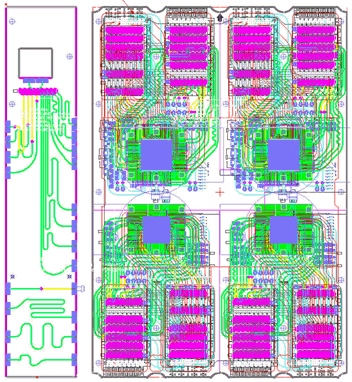
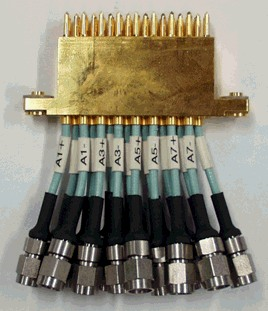
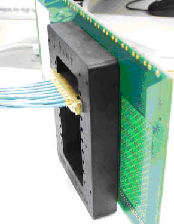
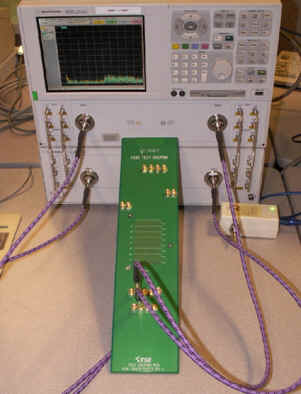

DUT board performance evaluation
For high-speed digital applications you must be able to measure the performance of a DUT board, especially for new designs or when trying a new PCB manufacturer.
A recommended approach is to construct a test coupon together with the DUT board. The test coupon should have the same signal path as the DUT board. But instead of a DUT socket you can add a connector.
The figure below shows a layout example of a DUT board which includes a test coupon on the same panel.

The test coupon mimics the best and worst signal paths on the DUT board but with a connector instead of a DUT socket.
Pogo via measurement
The remaining challenge is connecting the measurement instrument to the pogo via.
One option is to substitute also the pogo via by a connector. This option has the disadvantage that you remove the pogo via and pogo assembly from the measurement path. Often this is not acceptable since the pogo via performance is critical.
Advantest suggests to use a bench version of the Advantest pogo assembly with SMA connectors, and to dock this bench pogo assembly to the test coupon using a special mechanical bracket.
The graphics below show a bench pogo assembly, a bench pogo assembly mounted to the test coupon, and a bench measurement setup.


To obtain the bench pogo assembly and the mounting bracket, please contact your Advantest representative.

This setup can also be used for time-domain reflectometer (TDR) measurements on DUT boards.
Functional changes
- Introduced before SmarTest 6.3.2